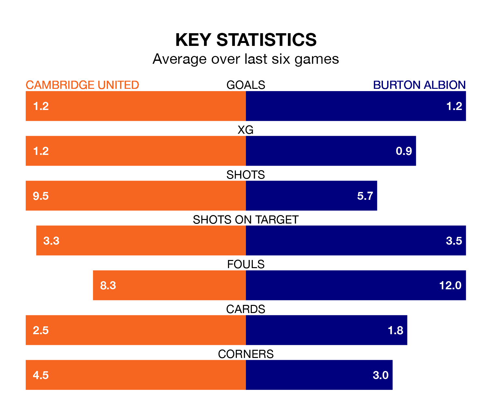

Burton Albion travel to Cambridge United on Saturday in EFL League One.
The visitors come into the game on the back of a win in their last match, having beaten Charlton Athletic 2-0 at home, with goals from John Brayford and Mark Helm.
Cambridge, meanwhile, drew their last match, 0-0 against Exeter City.
In the last 10 years, Cambridge and Burton have played each other on six occasions. Cambridge won three of them, Burton two, and they drew once.
On average, Cambridge scored 2.3 goals and the Brewers 1.7 in those matches.
Their last meeting was on October 9, when Burton won 2-1 at home.
With 23 goals in 26 games so far this season, Cambridge are scoring at below the league average rate with 0.9 goals per game. And they are conceding at an average rate, letting in 33 goals at a rate of 1.3 per game.
Burton are also below average scorers, with 0.9 goals per game, compared to a league average of 1.3. They have conceded 1.4 goals per game.
Albion are 15th in the table after 28 games, of which they have won eight and drawn seven, earning 31 points.
United are one place ahead of the Brewers in 14th, with eight wins and seven draws putting them on the same number of points.
The hosts are in mixed form in EFL League One, with three wins and a draw from their last six games.
And also with three wins and a draw over that period, the away side's form is identical – they have both taken 10 points from 18.
Updated: 09:07 (UTC), 24/01/24